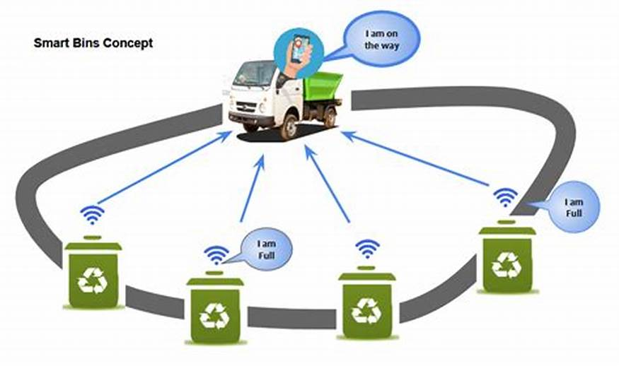

Smart Waste Management System is specifically designed for monitoring and managing waste in public dustbins.

The key issues it addresses with dustbin are:
- Preventing Overflow in Public Dustbins: The system ensures bins are emptied before they reach capacity, helping avoid litter in streets, parks, and public areas.
- Optimizing Dustbin Collection Routes: By tracking fill levels, waste collection trucks only visit bins that need emptying, making routes more efficient and reducing unnecessary trips.
- Encouraging Proper Use of Public Dustbins: With community engagement and awareness features, it promotes correct waste disposal and segregation, leading to cleaner public spaces and less environmental impact.